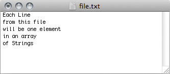
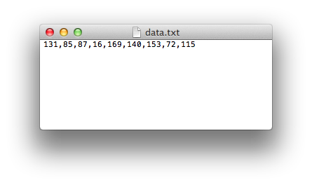
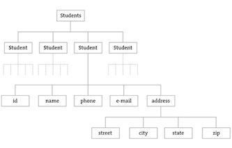
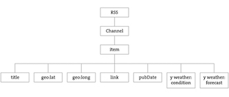

This tutorial is for Processing version 2.0+. If you see any errors or have comments, please let us know.
This tutorial picks up where the Strings and Drawing Text tutorial leaves off and examines how to use String objects as the basis for reading and writing data. We'll start by learning more sophisticated methods for manipulating Strings, searching in them, chopping them up, and joining them together. Afterwards, we'll see how these skills allow us to use input from data sources, such as text files, web pages, xml feeds, and 3rd party APIs and take a step into the world of data visualization.
Manipulating Strings
In Strings and Drawing Text, we touched on a few of the basic functions available in the Java String class, such as charAt(), toUpperCase(), equals(), and length(). These functions are documented on the Processing reference page for Strings. Nevertheless, in order to perform some more advanced data parsing techniques, we'll need to explore some additional String manipulation functions documented in the Java API.
Let's take a closer look at the following two String functions: indexOf() and substring(). indexOf() locates a sequence of characters within a String. It takes one argument, a search String, and returns a numeric value that corresponds to first occurrence of the search string inside of the string being searched.
String search = "def"; String toBeSearched = "abcdefghi"; int index = toBeSearched.indexOf(search); // The value of index in this example is 3.
Strings are just like arrays, in that the first character is index number zero and the last character is the length of the string minus one. If the search string cannot be found, indexOf() returns -1. This is a good choice because -1 is not a legitimate index value and therefore can indicate "not found." After finding a search phrase within a String, we might want to separate out part of the string, saving it in a different variable. A part of a string is known as "substring." The substring() function which takes two arguments, a start index and an end index and returns the substring in between the two indices.
String alphabet = "abcdefghi"; String sub = alphabet.substring(3,6); // The String sub is now "def".
Note that the substring begins at the specified start index (the first argument) and extends to the character at end index (the second argument) minus one. I know. I know. Wouldn't it have been easier to just take the substring from the start index all the way to the end index? While this might initially seem true, it's actually quite convenient to stop at end index minus one. For example, if you ever want to make a substring that extends to the end of a string, you can simply go all the way to thestring.length(). In addition, with end index minus one marking the end, the length of the substring is easily calculated as end index minus begin index.
Splitting and Joining Strings
In Strings and Drawing Text, we saw how strings can be joined together (referred to as "concatenation") using the "+" operator. Let's review with a example that uses concatenation to get user input from a keyboard. Processing has two additional functions that make joining strings (or the reverse, splitting them up) easy. In sketches that involve parsing data from a file or the web, we will often be presented that data in the form of an array of strings or as one long string. Depending on what we want to accomplish, it's useful to know how to switch between these two modes of storage. This is where these two new functions, split() and join(), will come in handy.
"one long string or array of strings" ←→ {"one", "long", "string", "or" ,"array", "of", "strings"}Let's take a look at the split() function. split() separates a longer string into an array of strings, based on a split character known as the delimiter. It takes two arguments, the string to be split and the delimiter. (The delimiter can be a single character or a string. Note that in the code below the period is not set as a delimiter and therefore will be included in the last string in the array: "dog."
// Splitting a String based on spaces
String spaceswords = "The quick brown fox jumps over the lazy dog.";
String[] list = split(spaceswords, " ");
for (int i = 0; i < list.length; i++) {
println(list[i] + " " + i);
}
If you want to use more than one delimiter to split up a text, you must use the Processing function splitTokens(). splitTokens() works identically to split() with one exception: any character that appears in the String qualifies as a delimiter. In the code below, the period is set as a delimiter and therefore will not be included in the last spot in the array: "dog"
// Splitting a String based on a multiple delimiters
String stuff = "hats & apples, cars + phones % elephants dog.";
String[] list = splitTokens(stuff, " &,+.");
for (int i = 0; i < list.length; i++) {
println(list[i] + " " + i);
}
If we are splitting numbers in a String the resulting array can be converted into an integer array with Processing's int() function. Numbers in a string are not numbers and cannot be used in mathematical operations unless we convert them first.
// Calculate sum of a list of numbers in a String
String numbers = "8,67,5,309";
// Converting the String array to an int array
int[] list = int(split(numbers, ','));
int sum = 0;
for (int i = 0; i < list.length; i++) {
sum = sum + list[i];
}
println(sum);
The reverse of split() is join(). join() takes an array of Strings and joins them together into one long string. The join() function also takes two arguments, the array to be joined and a separator. The separator can either be a single character or a String of characters.
Consider the following array:
String[] lines = {"It", "was", "a", "dark", "and", "stormy", "night."};
Using the + operator along with a for loop, we can join an array of strings together as follows:
// Manual Concatenation
String onelongstring = "";
for (int i = 0; i < lines.length; i++) {
onelongstring = onelongstring + lines[i] + " ";
}
The join() function, however, allows us to bypass this process achieving the same result in only one line of code.
// Using Processing's join() String onelongstring = join(lines," ");
Reading and Writing Text Files
Data can come from many different places: web sites, news feeds, databases, etc. To start, we'll demonstrate how to work with the simplest means of data retrieval data: reading from a text file.Text files can be used as a very simple database (we could store settings for a program, a list of high scores, numbers for a graph, etc.) or to simulate a more complex data source.
In order to create a text file, you can use any simple text editor. Windows Notepad or Mac OSX TextEdit will do, just make sure you format the file as "plain text." It is also advisable to name the text files with the ".txt" extension, just to avoid any confusion. And just as with image files, these text files should be placed in the sketch's "data" directory in order for them to be recognized by the Processing sketch.
Once the text file is in place, Processing's loadStrings() function is used to read the content of the file into an String array. The individual lines of text in the file each become an individual element in the array.

// This code will print all the lines from the source text file.
String[] lines = loadStrings("file.txt");
println("there are " + lines.length + " lines");
println(lines);
Text from a file can be used to generate a simple visualization. Take the following data file.
Here, we can load the numbers separated by commas and split them into an array of ints used to set color and height of rectangles.
int[] data;
void setup() {
size(200,200);
// Load text file as a string
String[] stuff = loadStrings("data.txt");
// Convert string into an array of integers using ',' as a delimiter
data = int(split(stuff[0],','));
}
void draw() {
background(255);
stroke(0);
for (int i = 0; i < data.length; i++) {
fill(data[i]);
rect(i*20,0,20,data[i]);
}
}
Text can also be written back to a data file with saveStrings(). saveStrings() writes an array of strings to a file, one line per string.
String words = "apple bear cat dog";
String[] list = split(words, ' ');
// Writes the strings to a file, each on a separate line
saveStrings("nouns.txt", list);
There are cases, however, where you don't want to write a text file all at once. Rather, you want to continuously append to a file over time. This can be achieved with the PrintWriter class. Take the following example which writes saves mouseX and mouseY to a text file for each cycle through draw(), quitting when you press a key.
PrintWriter output;
void setup() {
// Create a new file in the sketch directory
output = createWriter("positions.txt");
}
void draw() {
point(mouseX, mouseY);
output.println(mouseX); // Write the coordinate to the file
}
void keyPressed() {
output.flush(); // Writes the remaining data to the file
output.close(); // Finishes the file
exit(); // Stops the program
}
Tabular Data
You may have noticed that the graphing example above loads a text file with numbers separated by commas. Processing includes a Table class which will load a comma-separated (CSV) or tab-separated (TSV) file and automatically parse the data into columns and rows for you. This is a great deal more convenient than struggling to manually parse large data files with split(). It works as follows. Let's say you have a data file that looks like:

Instead of saying:
String[] stuff = loadStrings("data.csv");
We can now say:
Table table = loadTable("data.csv");
Now we've missed an important detail. Take a look at the data.csv text file above. Notice how the first line of text is not the data itself, but rather a "header row." This row includes labels that describe the data included in each subsequent row. The good news is that Processing can automatically interpret and store the headers for you, if you pass in the option "header" when loading the table. (In addition to "header" there are other options you can specify. For example if your file is called data.txt but is comma separated data you can pass in the option "csv". If it also has a header row, then you can specifiy both options like so: "header,csv"). A full list of options can be found on the loadTable() documentation page.
Table table = loadTable("data.csv","header");
Now that the table is loaded, we can look at how we grab individual pieces of data or iterate over the entire table. Let's look at the data visualized as a grid.

In the above grid we can see that the data is organized in terms of columns and rows. One way to access the data would be to therefore request a value by its numeric column and row location (with zero being the first row or first column). This is similar to accessing a pixel color at a given (x,y) location. Here we are getting a piece of data at a given (column,row) location.
int val1 = table.getInt(1,2); // val now has the value 235 float val2 = table.getFloat(2,3); // val2 now has the value 44.758068 String s = table.getString(3,0); // s now has the value "Happy"
While the numeric index is sometimes useful, it's generally going to be more convenient to access each piece of data by the column name. For example, we could pull out a specific row from the Table.
TableRow row = table.getRow(2); // Gets the third row (index 2)Note in the above line of code that a Table object refers to the entire table of data while a TableRow object handles an individual row of data within the Table. Once we have the TableRow object, we can ask for data from some or all of the columns.
int x = r.getInt("x"); // x has the value 273
int y = r.getInt("y"); // y has the value 235
float d = r.getFloat("diameter"); // d has the value 61.14072
String s = r.getString("name"); // s has the value "Joyous"
The method getRow() returns a single row from the table. If you want to grab all the rows and iterate over them you can do so with the method rows().
for (TableRow row : table.rows()) {
float x = row.getFloat("x");
float y = row.getFloat("y");
float d = row.getFloat("diameter");
String n = row.getString("name");
// Do something with the data of each row
}
If you want to search for a select number of rows within the table, you can do so with findRows() and matchRows().
In addition to being read, Table objects can be altered or created on the fly while a sketch is running. Cell values can be adjusted, rows can be removed, and new rows can be added. For example, to set new values in a cell there are functions setInt(), setFloat(), and setString().
// Update the value of column "x" to mouseX in a given TableRow.
row.setInt("x",mouseX);
To add a new row to a Table, simply call the method addRow() and set the values of each column.
// Create a new row
TableRow row = table.addRow();
// Set the values of that row
row.setFloat("x", mouseX);
row.setFloat("y", mouseY);
row.setFloat("diameter", random(40, 80));
row.setString("name", "new label");
To delete a row to a Table, simply call the method removeRow() and pass in the numeric index of the row you would like removed. The following code for example, removes the first row whenever the size of the table is greater than ten rows.
// If the table has more than 10 rows
if (table.getRowCount() > 10) {
// Delete the first row
table.removeRow(0);
}
For an example that creates objects from and saves objects to a Table, take a look at LoadSaveTable under Topics --> Advanced Data.
XML Data
For grabbing data from the web, an XML (Extensible Markup Language) feed is an excellent option (if available). Unlike HTML (which is designed to make content vieweable by a human's eyes) XML is designed to make content viewable by a computer and facilitate the sharing of data across different systems.
XML organizes information in a tree structure. Let's imagine a list of students. Each student has an id number, name, address, e-mail, and telephone number. Each student's address has a city, state, and zip code. An XML tree for this dataset might look like the following:

<?xml version="1.0" encoding="UTF-8"?>
<students>
<student>
<id>001</id>
<name>Daniel Shiffman</name>
<phone>555-555-5555</phone>
<email>daniel@shiffman.net</email>
<address>
<street>123 Processing Way</street>
<city>Loops</city>
<state>New York</state>
<zip>01234</zip>
</address>
</student>
<student>
<id>002</id>
<name>Zoog</name>
<phone>555-555-5555</phone>
<email>zoog@planetzoron.uni</email>
<address>
<street>45.3 Nebula 5</street>
<city>Boolean City</city>
<state&tt;Booles</state>
<zip>12358</zip>
</address>
</student>
</students>
Note the similarities to object-oriented programming. We could think of the XML tree in the following terms. The XML document represents an array of student objects. Each student object has multiple pieces of information, an id, a name, a phone number, an e-mail address, and a mailing address. The mailing address is also an object that also has multiple pieces of data, such as street, city, state, and zip.
Let's look at Yahoo's XML feed for weather data. Here is the raw XML source (Note I have edited it for simplification purposes).
<?xml version="1.0" encoding="UTF-8" standalone="yes" ?>
<rss version="2.0" xmlns:yweather="http://xml.weather.yahoo.com/ns/rss/1.0">
<channel>
<item>
<title>Conditions for New York, NY at 3:51 pm EST</title>
<geo:lat>40.67</geo:lat>
<geo:long>-73.94</geo:long>
<link>http://xml.weather.yahoo.com/forecast/USNY0996_f.html</link>
<pubDate>Mon, 20 Feb 2006 3:51 pm EST</pubDate>
<yweather:condition text="Fair" code="34" temp="35" date="Mon, 20 Feb 2006 3:51 pm EST"/>
<yweather:forecast day="Mon" date="20 Feb 2006" low="25" high="37" text="Clear" code="31"/>
</item>
</channel>
</rss>
And here is the data mapped in the tree structure.

You may be wondering what the top level "RSS" is all about. Yahoo's XML weather data is provided in RSS format. RSS stands for "Really Simple Syndication" and is a standardized XML format for syndicating web content (such as news articles, etc.)
Now that we have a handle on the tree structure, we should look at the specifics inside that structure. With the exception of the first line (which simply indicates that this page is XML formatted), this XML document contains a nested list of elements, each with a start tag, i.e. <channel> and an end tag, i.e. </channel>. Some of these elements have content between the tags:
<title>Conditions for New York, NY at 3:51 pm EST</title>
and some have attributes (formatted by attribute name equals attribute value in quotes):
<yweather:forecast day="Mon" date="20 Feb 2006" low="25" high="37" text="Clear" code="31"/>
Knowing this format, we could certainly be clever with our use of split(), indexOf(), and substring() to find the pieces we want in the raw XML. The point here, however, is that because XML is a standard format, we don't have to do this. Rather, we can use an XML parser. In Processing, the XML parser is called just that: XML.
XML xml = loadXML("http://xml.weather.yahoo.com/forecastrss?p=10003");
Here, instead of loadStrings() or loadTable(), we're now calling loadXML() and passing in the address (URL or local file) of our XML document. An XML object represents one element of an XML tree. When a document is first loaded, that XML object is always the root element. Referring back to XML tree diagram, we see that we can find the current temperature via the following path:
- The root of the tree is RSS.
- RSS has a child named channel.
- Channel has a child named item.
- Item has a child named yweather:condition.
- The temperature is stored in yweather:condition as the attribute temp.
We could translate the above into code as follows:
XML root = loadXML("http://xml.weather.yahoo.com/forecastrss?p=10003"); // Step 1
XML channel = root.getChild("channel"); // Step 2
XML item = channel.getChild("item"); // Step 3
XML yweather = item.getChild("yweather:condition"); // Step 4
int temperature = yweather.getInt("high"); // Step 5
This is a bit long-winded, however, and so can be compressed down into one (or three as below) lines of code.
XML root = loadXML(http://xml.weather.yahoo.com/forecastrss?p=10003); // Step 1
XML forecast = root.getChild("channel").getChild("item").getChild("yweather:forecast"); // Steps 2-4
int temperature = forecast.getInt("high"); // Step 5
Finally, the second line of code above can be further condensed to:
XML forecast = xml.getChild("channel/item/yweather:forecast"); // Steps 2-4
It should also be noted that we're accessing the child nodes by their name (i.e. "channel", "item", etc.), but they can also be accessed numerically via an index (starting at zero, same as an array). This is convenient when looping over a list of children. In LoadSaveTable, we used a series of comma separated values in a text file to store information related to Bubble objects. An XML document can also be used in the same manner. Consider the following XML document:
<?xml version="1.0" encoding="UTF-8"?>
<bubbles>
<bubble>
<position x="160" y="103"/>
<diameter>43.19838</diameter>
<label>Happy</label>
</bubble>
<bubble>
<position x="372" y="137"/>
<diameter>52.42526</diameter>
<label>Sad</label>
</bubble>
<bubble>
<position x="273" y="235"/>
<diameter>61.14072</diameter>
<label>Joyous</label>
</bubble>
<bubble>
<position x="121" y="179"/>
<diameter>44.758068</diameter>
<label>Melancholy</label>
</bubble>
</bubbles>
In the above XML, the root element is "bubbles" which has four children. Each child "bubble" has 3 children, "position", "diameter", and "label." The "position" element has two attributes, "x" and "y." To access the list of all XML nodes "bubble" we can use the getChildren() method, passing in the name "bubble"
// Load an XML document
XML xml = loadXML("bubbles.xml");
// Get all the child elements
XML[] children = xml.getChildren("bubble");
Once we have the array of XML objects, we can iterate over them, accessing the individual pieces of data for each "bubble". Notice how the syntax for getting XML attributes (in this case, "x" and "y" of the position element is slightly different than pulling content directly from an element (in this case, "diameter" and "label").
for (int i = 0; i < bubbles.length; i++) {
// The position element has two attributes: x and y
XML positionElement = children[i].getChild("position");
// Note how with attributes we can get an integer or float via getInt() and getFloat()
float x = positionElement.getInt("x");
float y = positionElement.getInt("y");
// The diameter is the content of the child named "diamater"
XML diameterElement = children[i].getChild("diameter");
// Note how with the content of an XML node, we retrieve via getIntContent() and getFloatContent()
float diameter = diameterElement.getFloatContent();
// The label is the content of the child named "label"
XML labelElement = children[i].getChild("label");
String label = labelElement.getContent();
}
XML elements can be added and removed from the XML tree with the addChild() and removeChild() methods.
For the full example that creates objects from and saves objects to an XML document, take a look at LoadSaveXML under Topics --> Advanced Data.
Threads
You are likely familiar with the idea of writing a program that follows a specific sequence of steps -- setup() first then draw() over and over and over again! A Thread is also a series of steps with a beginning, a middle, and an end. A Processing sketch is a single thread, often referred to as the "Animation" thread. Other threads sequences, however, can run independently of the main Processing sketch. In fact, you can launch any number of threads at one time and they will all run concurrently.
Processing does this all the time, whenever you write an event callback, such as serialEvent(), or captureEvent(), etc. these functions are triggered by a different thread running behind the scenes, and they alert Processing whenever they have something to report. This is useful whenever you need to perform a task that takes too long and would slow down the main animation's frame rate, such as grabbing data from the network (XML, database, etc.) If a separate thread gets stuck or has an error, the entire program won't grind to a halt, since the error only stops that individual thread. To create independent, asynchronous threads, you can use the thread() function built into Processing.
void setup() {
size(200,200);
thread("someFunction");
}
void draw() {
}
void someFunction() {
// This function will run as a thread when called via
// thread("someFunction") as it was in setup!
}
The thread() function receives a String as an argument. The String should match the name of the function you want to run as a thread. This is especially useful in sketches that grab data for the web. Rather than have the animation freeze while the sketch is waiting to retrieve data, the sketch can continue to loop through draw() updating the data when the thread is completed. In these cases, a boolean variable can be useful to track the status of the thread.
boolean loading = false;
The function that loads the data can then set loading equal to true at the start and false at the end.
void loadData() {
loading = true;
///////////////////////////////////
// All of the data retrival code //
///////////////////////////////////
loading = false;
}
In draw(), you can choose to display something to indicate the thread is running (when loading equals true).
void draw() {
if (loading) {
// Draw something to indicate loading
}
}
Two examples that follow this methodology can be found under Topics --> Advanced Data in the Processing examples.
While using the thread() function is a very simple way of getting an independent thread, it should be noted that it is somewhat limited. Being able to make a thread object is a great deal more powerful, and this can be done by extending the Java Thread class.
This tutorial is for Processing version 2.0+. If you see any errors or have comments, please let us know.